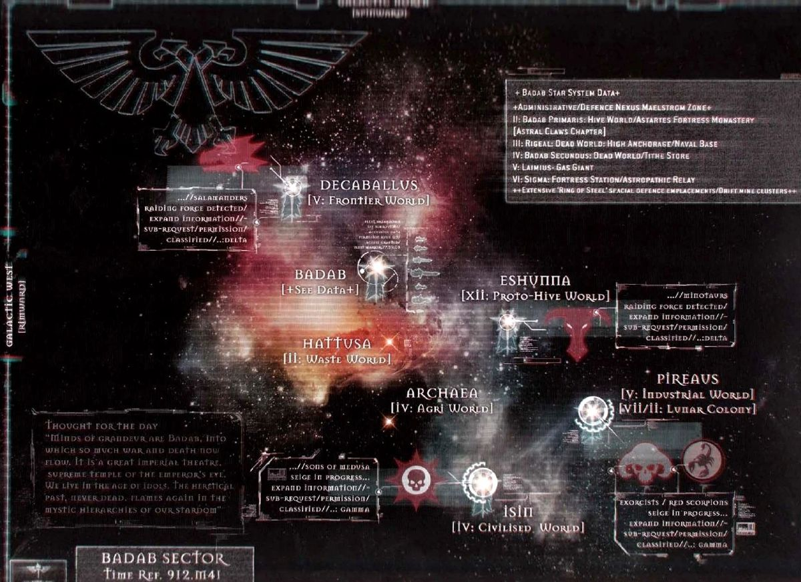

Badab Sector
| Badab Sector | |
|---|---|
| Star-sector of the Maelstrom | |
 Ancient chart of the Badab Sector, with the Endymion and Magog Clusters, the Khymaran Drift and the Pale Stars | |
| Segmentum | Segmentum Ultima |
| Capital | Badab Primaris (collapsed in 913.M41) |
| Notable worlds | Badab Primaris, Surngraad, Sacristan, Cygnax; the Endymion Cluster on the sector's edge |
| Governing body | The Astral Claws under Huron Blackheart from 718.M41; the Administratum from 913.M41 |
| Status (as of M42) | Returned to Imperial rule and administered by the Administratum; garrisoned by penitent Chapters |
The Badab Sector is a star-sector of the Maelstrom in the Segmentum Ultima of the Imperium of Mankind. Its worlds lie among dense gas clouds, asteroid fields and unstable Warp routes. The sector is best known as the place where the Badab War was fought between 901.M41 and 913.M41, the largest civil war between Space Marine Chapters in the 41st millennium.[1]
The sector takes its name from Badab, whose principal city and fortress is Badab Primaris. From 587.M41 the Astral Claws treated the sector as a personal domain, and its worlds were governed by the Chapter rather than by the Administratum.[1]
History
[edit]
Binding to the Maelstrom
[edit]In 587.M41 the High Lords of Terra issued an Edict Imperialis binding several Space Marine Chapters permanently to the Maelstrom. The Astral Claws were given the senior role at Badab, and the other Chapters were to answer to them. The edict is the first record of the Chapters' formal duty in the sector.[1]
Rise of the Tyrant
[edit]The Astral Claws were led after 715.M41 by Lufgt Huron, who became Chapter Master after the death of Rovik Blake in a fight with an Ork Warboss. In 718.M41 Huron put down a coup on Badab Primaris and styled himself the Tyrant of Badab. His petition to Terra for the complete subduing of the Maelstrom was dismissed without a full hearing in 729.M41.[1]
In 748.M41 the sector's gene-seed tithes to the Adeptus Mechanicus stopped, and a dispute over the planetary tithe of Badab Primaris began what the Imperial record calls the Badab Schism. The dispute led in time to open war.[2]
War and aftermath
[edit]The war began in 901.M41, when an Imperial tithe fleet was destroyed as it entered the Ring of Steel. The sector's worlds were then fought over for twelve years. The Endymion Cluster saw much of the fighting, and the Maelstrom as a whole was cut off from the rest of the Segmentum.[3]
The war ended in 913.M41. The Loyalist armada broke the Ring of Steel at Sentinel-Sigma, and the Star Phantoms stormed the Palace of Thorns on Badab Primaris. Huron was wounded, and the city collapsed. The surviving Secessionist Chapters were sentenced to penitent crusades, and the sector returned to Imperial administration.[3]
Geography
[edit]
The sector has no single natural centre. Its main worlds lie on the warp routes that cross the Maelstrom, and their systems are often separated by gas clouds that block astropathic messages. The principal systems include Badab, Surngraad, Sacristan and Cygnax. Sacristan was the site of the Firebombing of Sacristan in 905.M41, which the Imperial record counts among the worst atrocities of the war.[3]
Notable worlds
[edit]- '''Badab Primaris''': the sector capital and fortress-world of the Astral Claws. The Palace of Thorns stood here until its collapse in 913.M41.
- '''Surngraad''': retaken by Loyalist forces under Carab Culln in 906–907.M41.
- '''Sacristan''': an Imperial world whose people were largely killed by Fire Hawks firebombing in 905.M41.
- '''Cygnax''': fell to civil war between its garrison and Death Cult nihilists in 557.M41, long before the Badab War.
Governance
[edit]From 587.M41 until the war, the sector was governed through the Astral Claws under the authority of the High Lords. Huron claimed it as his own after 718.M41. After 913.M41 the sector returned to the Administratum, and its garrisons are made up of penitent Chapters ordered to hold the sector for a set number of years.[2][3]
Military
[edit]The Loyalist side was a coalition of Chapters, among them the Red Scorpions, Fire Hawks, Minotaurs, Executioners and Carcharodons, with a force of the Inquisition led by Inquisitor-Legate Jarndyce Frain. The Secessionist side was led by the Astral Claws, joined by the Lamenters and Mantis Warriors in 903.M41. The Black Templars had been sent to the Maelstrom in 869.M41, but their Crusade was called off after the First Tyrannic War.[3]
Timeline
[edit]| Date | Event |
|---|---|
| 557.M41 | Cygnax falls to civil war between its garrison and Death Cult nihilists |
| 587.M41 | The High Lords of Terra bind several Chapters to the Maelstrom; the Astral Claws take the senior role at Badab |
| 715.M41 | Lufgt Huron is chosen as Chapter Master of the Astral Claws |
| 718.M41 | Huron puts down a coup on Badab Primaris and styles himself the Tyrant of Badab |
| 729.M41 | Huron's petition to Terra for the subduing of the Maelstrom is dismissed |
| 748.M41 | Gene-seed tithes to the Adeptus Mechanicus stop; the Badab Schism begins |
| 901.M41 | An Imperial tithe fleet is destroyed at the Ring of Steel; the Badab War begins |
| 904.M41 | The Battle of Bellerophon's Fall destroys much of the Marines Errant command |
| 905.M41 | The Firebombing of Sacristan by the Fire Hawks |
| 906.M41 | The Betrayal at Grief kills Verant Ortys and Yarvan Sartaq at a parley |
| 906–907.M41 | Carab Culln retakes Surngraad and clears the Gargathea system |
| 911.M41 | Huron declares the Astral Claws no longer part of the Imperium |
| 913.M41 | The Loyalist armada breaks the Ring of Steel; the Palace of Thorns falls and Badab Primaris collapses |